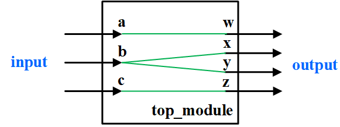
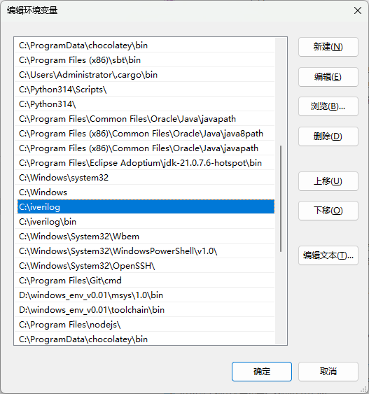

System Verilog 基础入门1
System Verilog 基础入门 1¶
硬件描述语言（HDL），是一种用于描述电子系统（尤其是数字电路）结构、行为和功能的专用编程语言。 System Verilog 是一种强大的硬件描述和验证语言，广泛用于芯片设计、验证以及 FPGA 实现。它在 Verilog 的基础上扩展了许多高级特性，包括面向对象编程、随机化、断言等。
system verilog 讲解视频-1:
1 System Verilog 基本结构¶
System Verilog 模板如下所示：
module <顶层模块名>
(<输入输出端口列表>);
output 输出端口列表; //输出端口声明
input 输入端口列表; //输入端口声明
/*定义数据，信号的类型，函数声明*/
reg 信号名；wire 信号名；
//逻辑功能定义
assign <结果信号名>=<表达式>; //使用assign语句定义逻辑功能，语句结束加分号";"
//用always块描述逻辑功能
always @ (<敏感信号表达式>)
begin
//过程赋值
//if-else，case语句
//while，repeat，for循环语句
//task，function调用
end
//调用其他模块
<调用模块名module_name > <例化模块名>(
<端口列表port_list >
);
//门元件例化
门元件关键字 <例化门元件名> (<端口列表port_list>);
endmodule
一个简单的设计示例：
module block1(a,b,c,d );
input a,b,c;
output d;
logic x;
assign d = a | x;
assign x = ( b & ~c );
endmodule
Verilog的基本设计单元是“模块 (block) ” , 如示例的这个模块block1。在设计时尽量一个module对应一个设计文件。
system verilog文件的后缀名为.sv， verilog文件的后缀名为.v
Verilog 模块的结构由在module和endmodule关键词之间的4个主要部分组成：
1.1 端口定义 : 指明模块的输入输出端口¶
示例中module block1(a,b,c,d )； 括号内的端口定义说明模块block1共有4个端口：a,b,c,d
1.2 I/O说明 ：指明端口类型¶
端口定义需要指明四个要素{方向，类型，位宽，名字}，格式如下。
input [类型] [位宽] 端口名1, 端口名2, …;
output [类型] [位宽] 端口名1, 端口名2, …;
inout [类型] [位宽] 端口名1, 端口名2, …;
这里input表示输入端口，output表示输出端口，inout表示双向端口。其中类型和位宽可以缺省。信号类型见3信号类型说明。
对应示例代码的部分
input a,b,c; //端口a,b,c为输入端口
output d; //端口d为输出端口
更普遍也是更推荐的写法是把端口定义和IO说明合在一起，上面示例可以下面更简洁的形式，注意端口列表里面用“,”分隔
module block1(
input a,b,c,
output d
);
//...
endmodule
在表达式中，我们可任意选择向量中的一位或相邻几位，分别称为位选择（bit-select）和域选择（part-select），例如：
logic [4:0] my_vec; // 一个位宽为 5 的向量
// 假定 my_vec 此时的值是 5'b01011
my_vec[0] // 表示最低位，值为 1'b1
my_vec[3:2] // 表示第四、三位，值为 2'b10
my_vec[4] // 表示最高位，值为 1'b0
1.3 信号类型声明：声明描述所需要的中间信号，连线或者寄存器类型¶
logic x; //这里声明了x信号
verilog 里连线类型对应wire， 寄存器类型对应 reg。 System Verilog 统一使用logic类型，通过功能描述来区分两种信号。
1.4 逻辑功能描述：¶
逻辑功能的定义是一个模块中最核心的部分，明确了模块的行为和数据的流动。
-
在HDL中，定义模块的逻辑功能主要有两种建模（描述）风格。
-
行为建模：描述输入和输出之间的因果关系。
-
基于持续赋值语句（assign）的建模，只能用于描述组合逻辑电路。
-
基于过程块（always块）的建模，既可描述组合逻辑，也可描述时序逻辑，抽象层次更高，可使用大量高级语言语法结构，例如if..else，for等。
-
-
结构化建模：调用其它已定义过的模块对整个电路的功能进行描述。
本示例中采用的通过assign 持续赋值语句的行为建模方式。
assign d = a | x; // d的逻辑为 信号a 与x的逻辑或；
assign x = ( b & ~c ); //x的逻辑是 信号b 与取反后的c信号 逻辑与；
这段代码综合后的电路：
提示
在使用硬件描述语言（HDL）时，要思考HDL应该产生的硬件，然后编写合适的语法来设计相应硬件。
小心不要把HDL当作软件来对待，不可以在不考虑硬件的情况下进行编码。
2 SystemVerilog 语法规则¶
-
SystemVerilog 大小写敏感
示例: reset 和 Reset 是不同的信号.
-
SystemVerilog 命名不能以数字做起始字符
示例: 2mux 非法命名
-
SystemVerilog 忽略空格、“_” 字符
-
注释： 与C语言注释相同
// 单行注释 / 多行 注释 /
3 assign 持续赋值语句¶
- 基于持续赋值语句的建模是指根据信号之间的逻辑关系，采用持续赋值语句（关键词assign）描述数字逻辑电路的方式，也称为数据流建模。
assign [#延迟量] 信号名 = 表达式;
-
持续赋值语句示例如下所示。只要“=”右侧表达式中的任意变量发生变化，该表达式立即重新计算并赋值给左边的变量。
其中 #延迟量 是不可以综合的，一般在仿真文件中使用。
-
基于持续赋值语句的建模只能用来描述组合逻辑电路。
实验任务 1
采用持续赋值语句 assign 完成如下图所示的输入端口和输出端口之间的连接。

任务 1：完成 wire4.sv 代码并完成仿真验证¶
本任务的目标是：根据图示完成 wire4 模块的端口连接，并通过 Icarus Verilog 进行功能仿真验证，最终用 GTKWave 查看时序波形。
1. 任务要求¶
按图示编写模块 wire4.sv。模块框架代码如下
module wire4 (
input logic a, b, c,
output logic w, x, y, z
);
// 请根据实验要求完成端口功能连接
endmodule
2. 下载测试代码¶
测试文件已准备好，可直接下载：
3. 实验步骤¶
本实验需要环境：windows + vscode + iverilog + gtkwave；
- vscode ：https://code.visualstudio.com/download
使用方法及相关插件可以参考中科大教程：https://soc.ustc.edu.cn/Digital/2025/lab1/verilog_coding/
安装时记得勾选gtkwave，安装完成后如果没有添加环境变量选项，需要手动将 iverilog 和 iverilog\bin 添加到windows PATH变量。

第一步：完成代码编写¶
推荐使用vscode软件，完成代码编写。
第二步：编译源码¶
打开代码所在目录：
右键选择“在终端中打开”
执行 Icarus Verilog 编译命令：
iverilog -g2012 -s tb_wire4 -o tb_wire4.out wire4.sv tb_wire4.sv
参数说明：
-g2012：启用 SystemVerilog 语法支持-s tb_wire4：指定测试模块为tb_wire4-o tb_wire4.out：生成仿真输出文件wire4.sv tb_wire4.sv：待编译的设计文件和测试文件
第三步：运行仿真¶
vvp tb_wire4.out
运行后，终端会输出类似下面的信息：
a b c | w x y z
0 0 0 | 0 0 0 0
1 0 0 | 1 0 0 0
0 1 0 | 0 1 1 0
0 0 1 | 0 0 0 1
这说明输入与输出关系符合要求.
第四步：生成波形文件¶
测试代码中已经写入了波形输出语句：
$dumpfile("tb_wire4.vcd");
$dumpvars(0, tb_wire4);
因此执行仿真后，会自动生成：
tb_wire4.vcd
第五步：用 GTKWave 打开波形¶
在命令行中执行：
gtkwave tb_wire4.vcd
如果你已经安装了 GTKWave，窗口会打开并显示波形信号。
surfer
更好用的波形查看工具 surfer：下载地址 https://surfer-project.org/
为方便使用可以解压缩到 iverilog下面的bin目录，这样就不需要单独设置路径了。